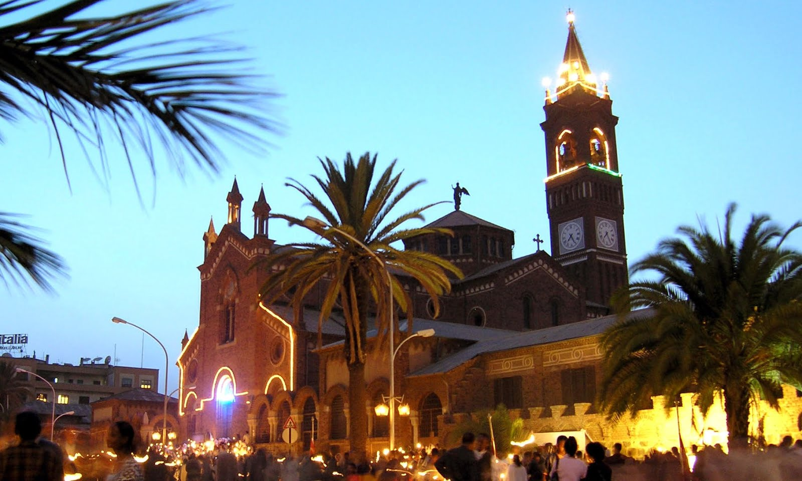
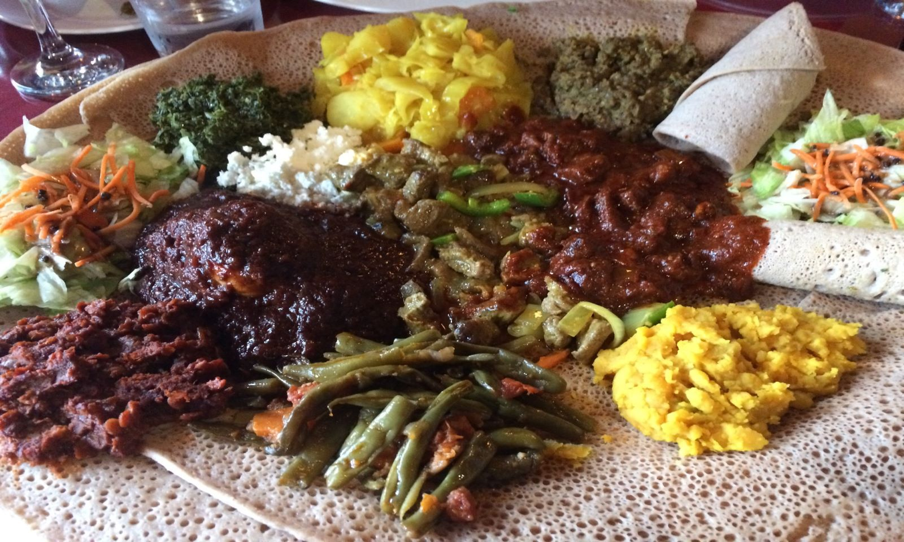

About Eritrea
Eritrea is a northeast African country on the Red Sea coast. It shares borders with Ethiopia, Sudan and Djibouti.
The capital city, Asmara, is known for its Italian colonial buildings, like St.Joseph's Cathedral, as well as art deco structures.
Italian, Egyptian and Turkish architecture in Massawa reflect the port city's colorful history.
Eritrean Cuisine
The main traditional food in Eritrean cuisine is tsebhi (stew), served with injera (flatbread made from teff, wheat, or sorghum and hilbet (paste made from legumes; mainly lentil and fava beans)
A typical traditional Eritrean dish consists of injera accompanied by a spicy stew, which frequently includes beef, goat, lamb or fish.
How To Eat Eritrean Food

Taita, also known as injera, is much more than a piece of bread. It also serves as a plate and cutlery!
Eating with your hand might sound messy, but it’s easy when you have a big piece of taita (sourdough bread) that you can use to mop up the stews and vegetables on your plate.
Most Prefered Dishes
- Geat/Porrage
- Zigni
- Shiro
- Coffe(Bun) Preparation
- Wash the coffee beans in cool water. Pick through them like just like you would any other bean, removing any yucky looking specimens
- Pour off extra water and roast the beans in pan over medium/medium-low until popping and dark brown. Keep shaking the pan.
- Grind the beans and brew it in a Jebena(coffe pot) for about 10-15 minutes then let it rest for few minutes until the coffee ground rest at the bottom then pour it in a Finjal(coffee cup).